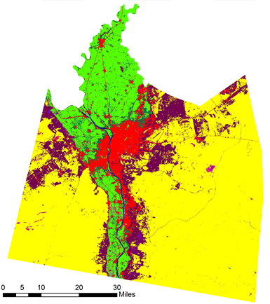

Client: The Kindness Punks
The planet Chromatica used to rot in conflict. Many tribes battled for dominance and resourced in the great Enigma Desert. While the Spiritual ones prayed and slept for peace, only the Kindness Punks fought for peace in Chromatica, with a little help from III.
Led by their fearless leader - intergalactic superstar Lady Gaga, the Kindness Punks were on a mission to bring water to the scorched Enigma Desert to end all wars between the local tribes. They contacted our firm and with our expertise in GIS and remote sensing, we were able to locate various resources of water deep below the ground of the desert.
1000 Doves shrubs have long been used by local tribes as one of the only three sources of food and water. But as it turned out, they also hold the key to finding water deep below the surface.
A map of the distribution of the 1000 Doves shurbs, as well as soil types of the desert revealed a very interesting pattern. The shrubs seem to distribute mostly on two soil types that the locals called Alice and Sour Candy. Both of these soil types have the largest particle sizes among all the soil types in the desert.
By further investigation through remote sensing (all thanks to our United-Federation-of-Planets-approved Sine From Above satellite, equipped with 911 different camera lenses), we discovered significantly higher moisture contents on the surface of Alice soil types, particularly in locations where the 1000 Doves shrubs had higher density. Further remote sensing analysis led to the discovery of numerous water pockets, at least 70 meters deep below the surface in these locations.
With the water pockets being found, now the local tribes no longer have to go to wars for food and water. A new era of peace and prosperity has come to the planet Chromatica.
A new drinking water plant named Rain On Me has been built, collecting water sustainably from the water pockets. Moisture farming has been implemented, which not only provides more food for the locals, but also transforming the desert soil and help it retain more moistures from morning dews and the annual rain week - one week in the whole year when it rains every day in the Enigma Desert. Thus, the water pockets can be constantly replenished.
The Kindness Punks leader Lady Gaga recorded an album called Chromatica, dedicated to the planet's new beginning. The song "Free Woman" is dedicated to fellow intergalactic superstar Britney Spears and our firm III.